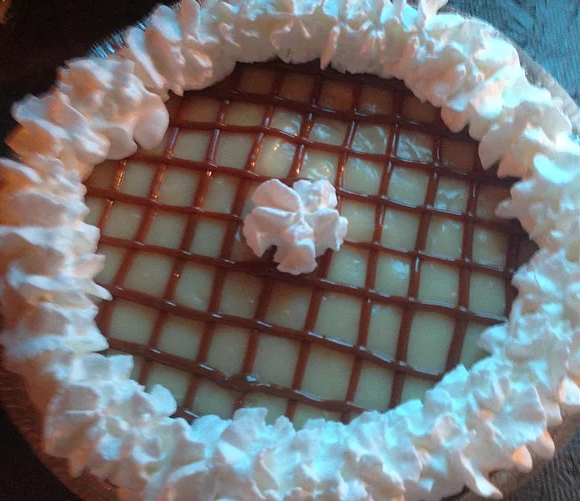

Banana Pie

It is a pie that combines caramel, bananas, and a graham cracker crust. You simmer the sweetened condensed milk in a water bath for 3 hours, until it turns into caramel.
Ingredients
- 1 (14 ounce) can sweetened condensed milk
- 3 bananas
- 1 (9 inch) prepared graham cracker crust
- 1 (12 ounce) container frozen whipped topping, thawed
Steps
- Fill a saucepan with 2 inches of water. Place an unopened can of sweetened condensed milk into the water. Bring to a simmer and let cook for 3 hours. Monitor the water closely, to make sure there is always water in the pan. Remove can from heat and let cool for 10 to 15 minutes.
- Carefully open can and pour contents into pie crust. Slice bananas over the top and cool in the refrigerator. Before serving, spread with whipped topping.
Main Page